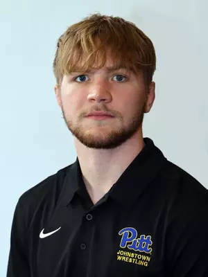

Your journey to know more about me starts here
Creative Applied AI Engineer and Solutions Architect with skills in web design, game coding, and marketing, combined with a background in psychology. Currently a student eager to apply technical and creative abilities in real-world projects. Experienced in using tools like Photoshop, Lightroom, and many AI-powered programs, with strong teamwork and communication skills, making me personable and easy to work with. Seeking opportunities to grow professionally, apply innovative solutions, and contribute to impactful projects.
I'm a creative and tech-savvy individual passionate about integrating AI into real-world projects to improve society. With a background in web design, game coding, psychology, and marketing, I love exploring how these fields intersect to drive innovation. Currently a student, I'm eager to learn, grow, and take my skills to the next level. I'm motivated by creativity and the opportunity to work with diverse technologies. Outside of work, I enjoy photography of anything that catches my creative eye, experimenting with AI-powered tools, and diving into human mind